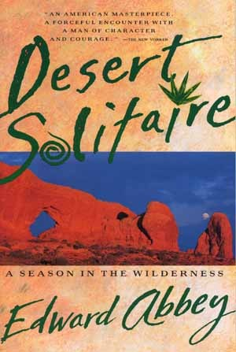

Desert Solitaire is an autobiographical book by American writer Edward Abbey, published in 1968. The book follows Abbey's season as a park ranger at Arches National Monument. Often compared to Henry David Thoreau's Walden, Desert Solitaire is a love letter to the American Southwest and a manifesto to the Parks Department regarding protection of natural spaces.
When writing of his stay at Arches National Park, Ed Abbey romanticizes the notion of solitude and describes the natural beauty he observes in vivid detail. He details the efforts he made to derail the development of the park, including removing stakes that marked where a road was to be paved. In Abbey's opinion, there should be no roads in National Parks. Instead, visitors would be required to enter on foot, bicycle, or horse, and be shuttled in by an official Park Service shuttle. His observations were potent, and his writing is thoroughly enjoyable.
 About the Author